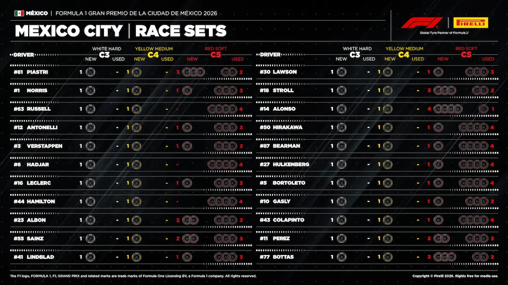
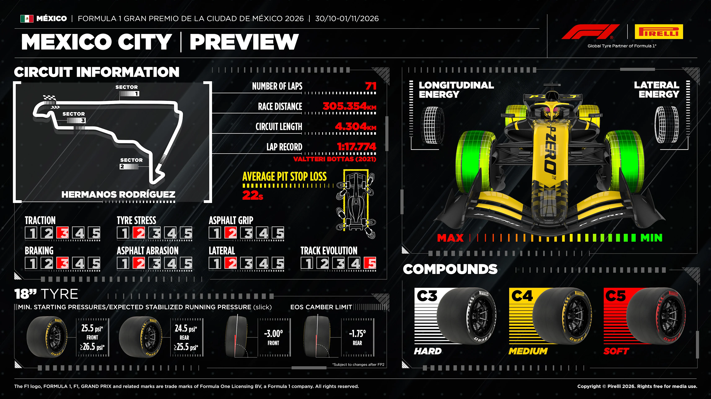
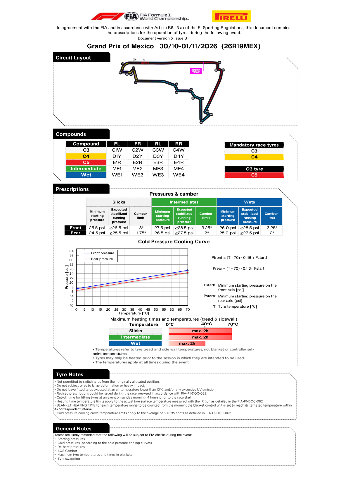

Tyres & Strategy
Compound allocation, degradation and the strategic shape of the race.
Race tyre availability
Source discovery notices — published chart available below
https://www.formula1.com/en/latest/article/strategy-guide-what-are-the-tactical-options-for-the-mexico-city-gp.22mzBSWEviowqhyGTbfhY: Published article is access-restricted; no login or protected API attempted
Pre-race tyre-set chart for Mexico City Grand Prix on 2026-11-01 — not tyres remaining after the finish. This published source is independent of optional FastF1 analysis.

Tyre sets available for the race (reviewed transcription)
| Driver | Team | Hard (C3) | Medium (C4) | Soft (C5) |
|---|---|---|---|---|
| Franco Colapinto COL | Alpine | 1 new1 left in total | 1 new1 left in total | 1 new4 used5 left in total |
| Pierre Gasly GAS | Alpine | 1 new1 left in total | 1 new1 left in total | 1 new3 used4 left in total |
| Fernando Alonso ALO | Aston Martin | 1 new1 left in total | 1 new1 left in total | 4 new1 used5 left in total |
| Lance Stroll STR | Aston Martin | 1 new1 left in total | 1 new1 left in total | 3 new2 used5 left in total |
| Gabriel Bortoleto BOR | Audi | 1 new1 left in total | 1 new1 left in total | 1 new4 used5 left in total |
| Nico Hulkenberg HUL | Audi | 1 new1 left in total | 1 new1 left in total | 1 new4 used5 left in total |
| Sergio Perez PER | Cadillac | 1 new1 left in total | 1 new1 left in total | 2 new3 used5 left in total |
| Valtteri Bottas BOT | Cadillac | 1 new1 left in total | 1 new1 left in total | 3 new2 used5 left in total |
| Charles Leclerc LEC | Ferrari | 1 new1 left in total | 1 new1 left in total | 1 new3 used4 left in total |
| Lewis Hamilton HAM | Ferrari | 1 new1 left in total | 1 new1 left in total | 0 new4 used4 left in total |
| Oliver Bearman BEA | Haas F1 Team | 1 new1 left in total | 1 new1 left in total | 1 new4 used5 left in total |
| Ryo Hirakawa HIR | Haas F1 Team | 1 new1 left in total | 1 new1 left in total | 1 new4 used5 left in total |
| Lando Norris NOR | McLaren | 1 new1 left in total | 1 new1 left in total | 1 new3 used4 left in total |
| Oscar Piastri PIA | McLaren | 1 new1 left in total | 1 new1 left in total | 3 new2 used5 left in total |
| George Russell RUS | Mercedes | 1 new1 left in total | 1 new1 left in total | 0 new4 used4 left in total |
| Kimi Antonelli ANT | Mercedes | 1 new1 left in total | 1 new1 left in total | 1 new3 used4 left in total |
| Arvid Lindblad LIN | Racing Bulls | 1 new1 left in total | 1 new1 left in total | 1 new3 used4 left in total |
| Liam Lawson LAW | Racing Bulls | 1 new1 left in total | 1 new1 left in total | 1 new3 used4 left in total |
| Isack Hadjar HAD | Red Bull Racing | 1 new1 left in total | 1 new1 left in total | 0 new4 used4 left in total |
| Max Verstappen VER | Red Bull Racing | 1 new1 left in total | 1 new1 left in total | 1 new3 used4 left in total |
| Alexander Albon ALB | Williams | 1 new1 left in total | 1 new1 left in total | 2 new3 used5 left in total |
| Carlos Sainz SAI | Williams | 1 new1 left in total | 1 new1 left in total | 2 new3 used5 left in total |
Source: Official 2026 Mexico City Grand Prix "Tyres Available for Race" allocation data. Source publication.
Table visually transcribed from the displayed chart; reviewed 2026-11-08T02:38:23Z. A changed source image disables this transcription until reviewed again.
Source discovery checked 2026-11-08T23:39:49+00:00.
FIA official tyre documents
Official source; curated transcription may await review. Linked PDFs are the authority. Discovery does not extract or verify numeric values, and does not replace the curated material below.
Last successful FIA document discovery: 2026-11-08T23:37:56.383862+00:00. This is retrieval time, not issue time; newer revisions may exist.
What this circuit does to a tyre
Extensive resurfacing from Turn 16 to Turn 1 and Turns 7–16 left only the first sector largely unchanged. Pirelli said the new asphalt's grip and roughness needed assessment in early running; thin air reduces aerodynamic load, so tyre slip and graining remain concerns. Warm-up and braking are also affected by the altitude. The initial allocation was two Hard, three Medium and eight Soft sets per driver, with an extra Soft reserved for Q3 qualifiers; a dry race requires two different slick compounds. These are pre-weekend rules, not the chart's post-qualifying remaining-set counts.
Why it matters here
Good into Turn 1, helped by the very long approach and a big tow effect in thin air. Elsewhere it is harder than the layout suggests.
Where passing is hard, strategy and the undercut decide the race; where it is easy, teams can afford to run longer and recover track position on merit.
Pirelli's event preview

Official FIA document screenshots
Some FIA screenshots could not be refreshed. Any existing images are from successful earlier downloads; use the original PDFs to check later revisions.
Automatically rendered from the official PDFs. These figures do not update or verify the curated numeric transcriptions above. Unchanged pages already illustrated above are not repeated here.
2026_mexico_city_grand_prix_-_competition_notes_-_pirelli_preview.pdf
PDF retrieved 2026-11-08T21:05:45+00:00; this is not its issue date.
